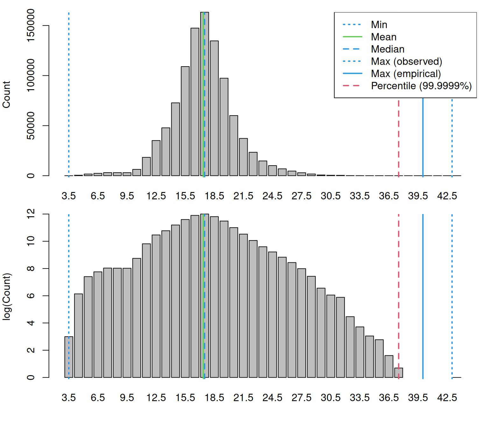
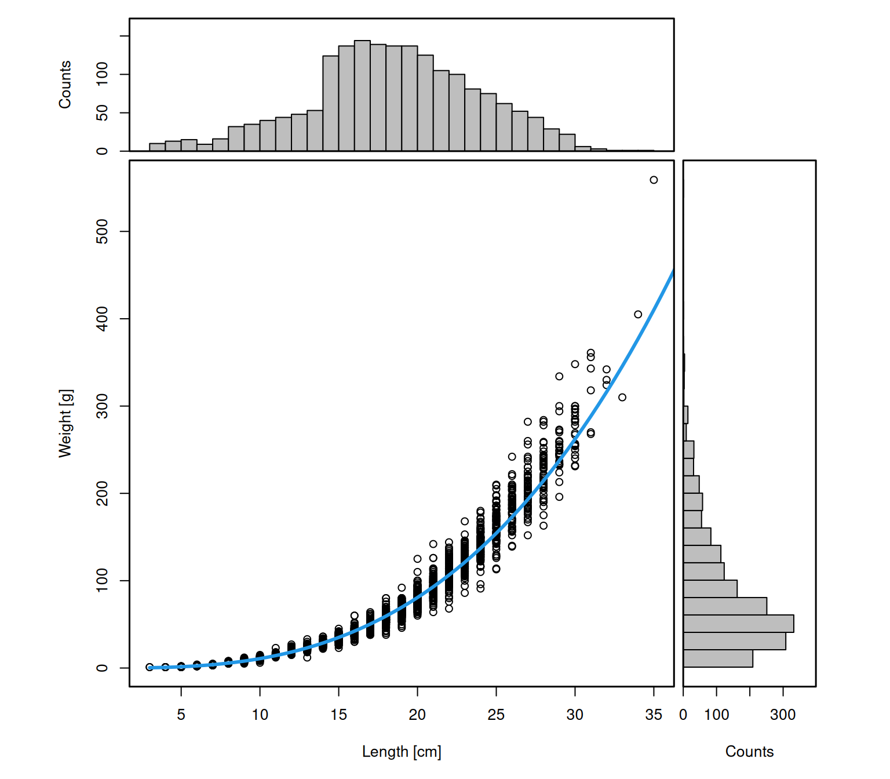
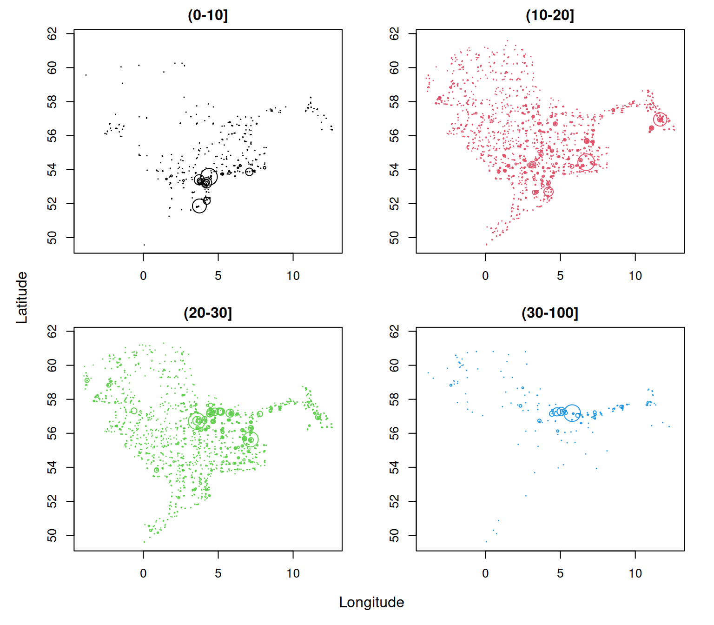

Deriving numbers and weight by haul and custom length classes
Source:vignettes/articles/custom-length-classes.Rmd
custom-length-classes.RmdThis vignette demonstrates how to derive numbers and weight by haul from ICES DATRAS survey data using DATRASextra. It shows how to
- create a haul-by-length matrix of numbers,
- convert numbers at length to weight at length,
- aggregate these quantities over custom length classes, and
- derive haul-level summaries for all fish combined or for user-defined length groups such as juveniles and adults.
These summaries are useful for survey standardisation, indicator development, biodiversity analyses, and stock-assessment workflows.
Outline
- Load DATRASextra
- Create numbers at length
- Convert numbers at length to weight at length
- Aggregate numbers and weight over custom length classes
- Summary
- References
Load DATRASextra
Load the package with:
This vignette assumes that a cleaned DATRAS data set is
already available. For a full workflow covering download, reading, and
cleaning of survey data, see
vignette("datrasextra-tutorial").
Here, we use the example data set dab included in the
package and apply a standard cleaning step first:
dab <- clean_datras(dab)Create numbers at length
Catch-at-length information is stored in the HL
component of a DATRAS object. Before aggregating these
data, it is useful to inspect the available length measurements:
lpars <- check_lengths(dab)
#> [1] "Length statistics:"
#> min mean median maxObs maxEmp perc
#> 99.9999% 3 17.36 17.5 43 40 37.5
#> [1] "Observations above:"
#> maxLEmp percL
#> Numbers 1e+00 1e+00
#> Percent 1e-04 1e-04
This function provides summary statistics and diagnostic plots of the
recorded lengths. It can help identify potential data issues such as
implausible values or unusual length distributions. If the data look
reasonable, the next step is to aggregate the HL
observations to numbers at length by haul and add the result to the
HH component:
dab <- add_numbers_at_length(dab)This creates a matrix HH$N, with one row per haul and
one column per length class:
dab[["HH"]][["N"]][1:5, 1:5]
#> sizeGroup
#> haul.id [3,4) [4,5) [5,6) [6,7) [7,8)
#> NS-IBTS:2020:1:DK:26D4:GOV:6:1 0 0 0 0 0
#> NS-IBTS:2020:1:DK:26D4:GOV:8:2 0 0 0 3 9
#> NS-IBTS:2020:1:DK:26D4:GOV:10:3 0 0 3 0 0
#> NS-IBTS:2020:1:DK:26D4:GOV:11:4 0 0 0 3 3
#> NS-IBTS:2020:1:DK:26D4:GOV:19:5 0 0 0 0 0By default, add_numbers_at_length() defines length
classes from the minimum and maximum observed lengths, using the
coarsest length recording resolution present in the data (see
?get_accuracy_cm). In most cases, this is a sensible
default.
If a different resolution or range is needed, custom breaks can be
supplied via cm_breaks and by. In general, it
is recommended to keep the numbers-at- length matrix as fine as
possible, because these length classes are also used to derive weights
at length in the next step. Coarser groupings can then be obtained later
with add_total_numbers_by_haul() or
add_total_weight_by_haul().
For example, the following code creates numbers at length using 0.5 cm bins:
## Define custom resolution of length bins
by <- 0.5
## Define custom length bins
cm_breaks <- seq(lpars$lPars$min, lpars$lPars$maxEmp, by = by)
## Recalculate numbers at length using custom bins
dab <- add_numbers_at_length(dab, cm_breaks = cm_breaks, by = by)The resulting matrix now has a finer length resolution:
dab[["HH"]][["N"]][1:5, 1:5]
#> sizeGroup
#> haul.id [3,3.5) [3.5,4) [4,4.5) [4.5,5) [5,5.5)
#> NS-IBTS:2020:1:DK:26D4:GOV:6:1 0 0 0 0 0
#> NS-IBTS:2020:1:DK:26D4:GOV:8:2 0 0 0 0 0
#> NS-IBTS:2020:1:DK:26D4:GOV:10:3 0 0 0 0 3
#> NS-IBTS:2020:1:DK:26D4:GOV:11:4 0 0 0 0 0
#> NS-IBTS:2020:1:DK:26D4:GOV:19:5 0 0 0 0 0Convert numbers at length to weight at length
Numbers at length are sufficient for some applications, but many analyses also require biomass or weight by length class or by haul. For example, biomass-based survey indices are often used in stock assessment or ecosystem analyses.
To derive weights, DATRASextra uses the individual
length and weight records stored in the CA component to
estimate a length-weight relationship. Before doing so, it is useful to
inspect the available weight data:
wpars <- check_weights(dab)
#> [1] "Length statistics:"
#> min mean median max
#> 1 3 18.94 19 35
#> [1] "Weight statistics:"
#> min mean median max
#> 1 1 85.93 66 559
#> [1] "Estimated LW parameters:"
#> [1] "a = 0.014 b = 2.903"
#> [1] "Lookup LW parameters in the species_info table:"
#> [1] "a = 0.007 b = 3.119"
This function provides summary statistics and diagnostic plots for
the weight data and the fitted length-weight relationship. If the
information looks reasonable, the numbers-at-length matrix in
HH$N can be converted to weight at length with:
dab <- add_weight_at_length(dab)This adds a matrix HH$Wgt, containing the estimated
weight in each length class for each haul.
The function uses the midpoints of the existing length bins in
HH$N (stored in attr(dab, "cm.breaks")) and
converts these lengths to weights using the fitted length-weight
relationship from the CA data.
One important caveat concerns the largest length class. If the final
bin is a plus group with a very large upper limit, such as
Inf, or extends far beyond the observed size range, the
midpoint of that bin may imply an unrealistically large weight. In such
cases, it may be preferable to use the plus_group
argument.
If the CA component does not contain enough information
to estimate a reliable length-weight relationship, empirical parameters
can instead be taken from the species_info table by setting
empirical = TRUE. Before doing so, it is good practice to
inspect the stored parameters:
species_info[
which(species_info$ScientificName_WoRMS == "Limanda limanda"),
c("a", "b")
]
#> a b
#> 1017 0.007 3.119If these values appear appropriate, the empirical relationship can be used with:
dab <- add_weight_at_length(dab, empirical = TRUE)Aggregate numbers and weight over custom length classes
By default, add_total_numbers_by_haul() and
add_total_weight_by_haul() sum over all available length
classes and return one total value per haul. In many applications,
however, it is useful to retain separate haul-level summaries for custom
length groups, for example juveniles and adults.
For dab, one biologically meaningful split is the approximate length
at 50% maturity, available in species_info:
(lm <- species_info[
which(species_info$ScientificName_WoRMS == "Limanda limanda"),
"Lm"
])
#> [1] 17.75We can use this value to define two custom groups, below and above
Lm:
length_cuts <- c(0, lm, Inf)
dab <- add_total_numbers_by_haul(dab, length_cuts = length_cuts)
dab <- add_total_weight_by_haul(dab, length_cuts = length_cuts)This returns haul-level summaries for juveniles and adults separately:
head(dab[["HH"]][["HaulN"]])
#> (0-17.75] (17.75-Inf]
#> NS-IBTS:2020:1:DK:26D4:GOV:6:1 26 160
#> NS-IBTS:2020:1:DK:26D4:GOV:8:2 57 100
#> NS-IBTS:2020:1:DK:26D4:GOV:10:3 207 229
#> NS-IBTS:2020:1:DK:26D4:GOV:11:4 43 90
#> NS-IBTS:2020:1:DK:26D4:GOV:19:5 233 299
#> NS-IBTS:2020:1:DK:26D4:GOV:21:6 0 1
head(dab[["HH"]][["HaulWgt"]])
#> (0-17.75] (17.75-Inf]
#> NS-IBTS:2020:1:DK:26D4:GOV:6:1 915.684 18487.350
#> NS-IBTS:2020:1:DK:26D4:GOV:8:2 1413.448 10274.518
#> NS-IBTS:2020:1:DK:26D4:GOV:10:3 7498.031 19681.076
#> NS-IBTS:2020:1:DK:26D4:GOV:11:4 1577.837 10108.460
#> NS-IBTS:2020:1:DK:26D4:GOV:19:5 11750.668 23250.572
#> NS-IBTS:2020:1:DK:26D4:GOV:21:6 0.000 76.908By default, the column names reflect the chosen cut points, but they can be renamed as needed:
colnames(dab[["HH"]][["HaulN"]]) <- c("juveniles", "adults")
colnames(dab[["HH"]][["HaulWgt"]]) <- c("juveniles", "adults")This makes the result easier to interpret:
head(dab[["HH"]][["HaulN"]])
#> juveniles adults
#> NS-IBTS:2020:1:DK:26D4:GOV:6:1 26 160
#> NS-IBTS:2020:1:DK:26D4:GOV:8:2 57 100
#> NS-IBTS:2020:1:DK:26D4:GOV:10:3 207 229
#> NS-IBTS:2020:1:DK:26D4:GOV:11:4 43 90
#> NS-IBTS:2020:1:DK:26D4:GOV:19:5 233 299
#> NS-IBTS:2020:1:DK:26D4:GOV:21:6 0 1Of course, any number of custom length groups can be defined. For example:
length_cuts <- c(0, 10, 20, 30, 100)
dab <- add_total_numbers_by_haul(dab, length_cuts = length_cuts)
dab <- add_total_weight_by_haul(dab, length_cuts = length_cuts)This gives haul-level numbers and weights for four user-defined length groups:
head(dab[["HH"]][["HaulN"]])
#> (0-10] (10-20] (20-30] (30-100]
#> NS-IBTS:2020:1:DK:26D4:GOV:6:1 0 68 118 0
#> NS-IBTS:2020:1:DK:26D4:GOV:8:2 24 75 58 0
#> NS-IBTS:2020:1:DK:26D4:GOV:10:3 16 328 92 0
#> NS-IBTS:2020:1:DK:26D4:GOV:11:4 8 58 66 1
#> NS-IBTS:2020:1:DK:26D4:GOV:19:5 0 477 55 0
#> NS-IBTS:2020:1:DK:26D4:GOV:21:6 0 1 0 0
head(dab[["HH"]][["HaulWgt"]])
#> (0-10] (10-20] (20-30] (30-100]
#> NS-IBTS:2020:1:DK:26D4:GOV:6:1 0.000 3904.189 15498.845 0.000
#> NS-IBTS:2020:1:DK:26D4:GOV:8:2 123.243 4278.710 7286.013 0.000
#> NS-IBTS:2020:1:DK:26D4:GOV:10:3 115.514 17078.956 9984.637 0.000
#> NS-IBTS:2020:1:DK:26D4:GOV:11:4 35.156 3231.022 8114.143 305.976
#> NS-IBTS:2020:1:DK:26D4:GOV:19:5 0.000 28859.317 6141.923 0.000
#> NS-IBTS:2020:1:DK:26D4:GOV:21:6 0.000 76.908 0.000 0.000These summaries can then be used to explore whether the spatial distribution differs among size groups. For example, the following plot shows where hauls with positive catches occurred for each length class, with point size scaled by haul-level abundance:
ncols <- ncol(dab[["HH"]][["HaulWgt"]])
par(mfrow = n2mfrow(ncols, asp = 2),
mar = c(3, 3, 2, 2),
oma = c(2, 2, 0, 0))
for (i in seq_len(ncols)) {
plot(dab[["HH"]]$lon, dab[["HH"]]$lat,
type = "n",
xlab = "", ylab = "",
main = colnames(dab[["HH"]]$HaulN)[i])
ind <- which(dab[["HH"]]$HaulN[, i] > 0)
points(dab[["HH"]]$lon[ind], dab[["HH"]]$lat[ind],
cex = dab[["HH"]]$HaulN[, i][ind] /
max(dab[["HH"]]$HaulN[, i][ind]) * 3,
col = i)
}
mtext("Longitude", 1, outer = TRUE)
mtext("Latitude", 2, outer = TRUE)
Summary
This vignette showed how to derive haul-level abundance and biomass summaries from DATRAS data using DATRASextra. Starting from a cleaned survey data set, it demonstrated how to inspect the available length and weight information, construct a numbers-at-length matrix, convert numbers at length to weight at length, and aggregate both quantities over custom length classes.
These tools make it straightforward to generate biologically meaningful haul- level summaries, either for the full size range or for selected groups such as juveniles and adults. The resulting variables can be used directly in further analyses, for example when building survey indices, comparing size-structured spatial patterns, or deriving indicators based on abundance or biomass.